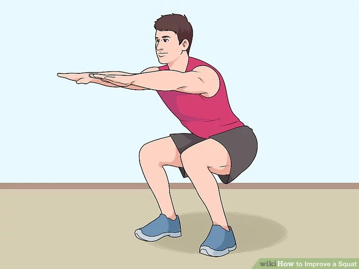
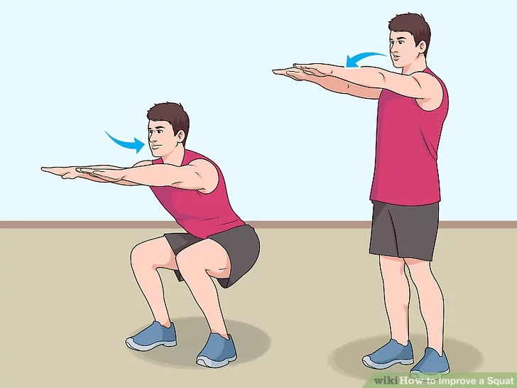

Keep your feet slightly wider than shoulder-width. Straighten your back. Angle your feet slightly outward toward 10 and 2 o'clock, not straight ahead.
Pretend as though you are going to sit back in a chair. Keep your heels on the ground. Pull in your abs. Keep your back straight in a neutral position throughout the exercise.
As you go down, push your hips back. Go as low as your body can while still keeping your shins vertical and your heels on the ground. From the lower position, push up off your heels and slowly rise up, balancing by leaning forward as necessary. If you can, aim to lower yourself until your hips sink beneath your knees. If you are just starting out, you may not be flexible enough to go this low. Work your way up to this level. Inhale as you lower. Exhale as you rise. Look forward as you squat to help keep your form correct. Extend your arms straight forward to help your balance. This will also help you keep your shins vertical.
If you're a beginner, you may want to aim for 10 reps. If you're fit, you can aim for 15-30 reps each set. Do one to three sets. Remember to rest between sets.